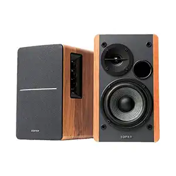

Feel The Music: The World of Physical Music Media
Home
Equipment
Gallery
Gallery
External Amplifier

Bookshelf Speakers
CDs
Sony Walkman CD player
External DAC for CD players
Turntable Needle
A Turntable
A vinyl Collection
Contact Us
Feel The Music
427 Vinyl Avenue, Suite 108
Salt Lake City, UT 84101
United States
(801)555-7342